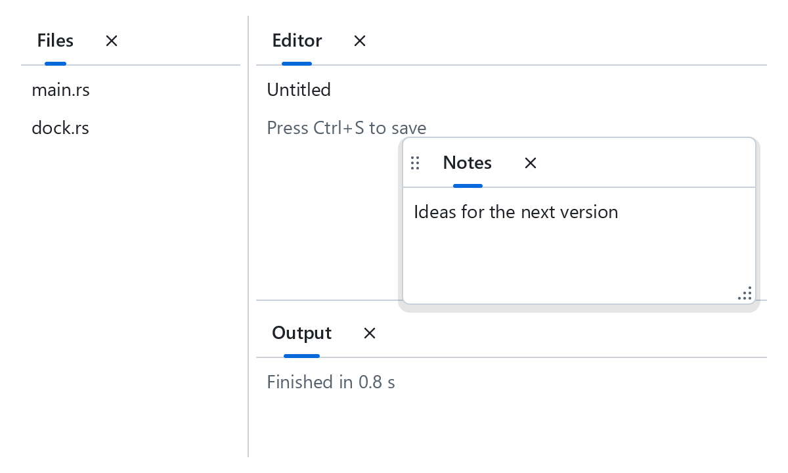
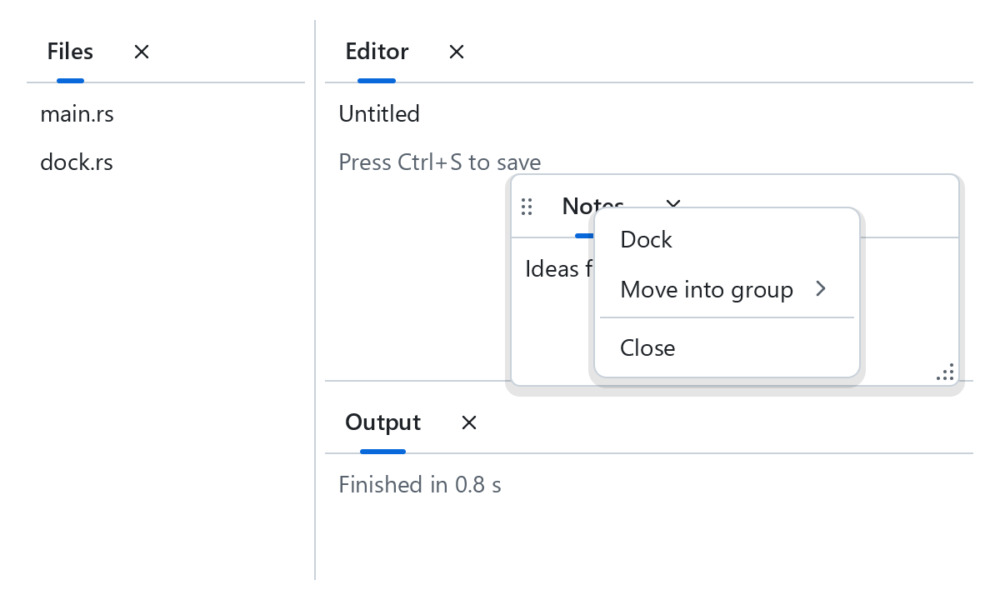
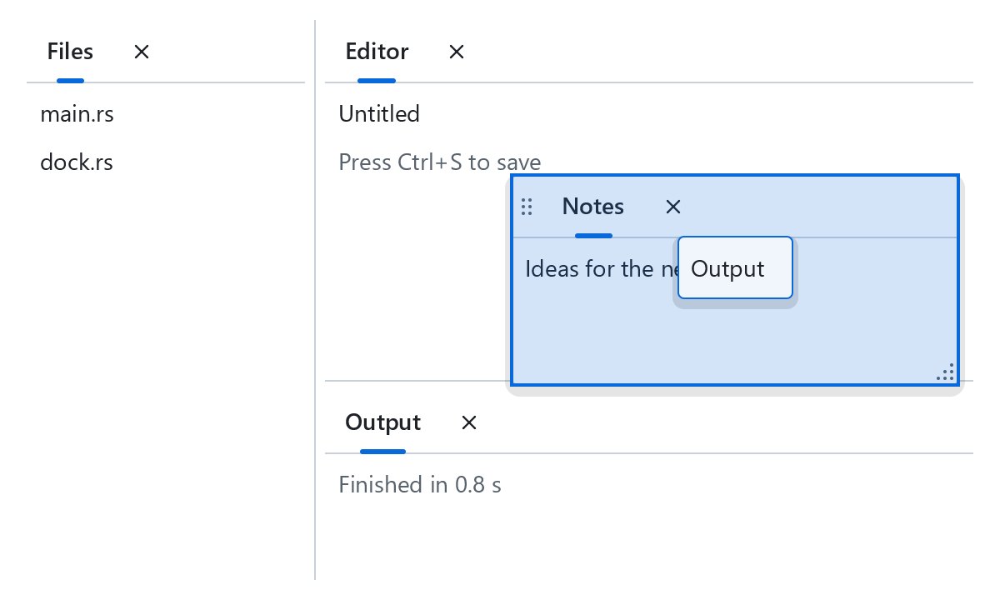

kargui 開発レポート ・ 第 13 章
浮いた枠
ドッキングの 2 段目として、タブのまとまりを窓の中に浮かせる枠を足しました。枠は引いて動かし、大きさを変え、メニューで元の場所へ戻せます。この章では、別の窓に出す前に窓の中から作った理由と、枠で覆っても下の部品へ操作が届いた不具合を紹介します。後半では、作者の 3 回の手の確かめで見つかった 3 つのことと、その直し方を書きます。
この章で分かること
- OS の別の窓に出す前に、窓の中に浮かせる形から作った理由
- 浮いた枠を、並べ方の木とは別に持つ作り
- 枠で覆っても、ホイールやスクロールの棒が枠の下の部品へ届いた理由と、描く順で隠す直し方
- F6 が浮いた枠を 1 つ飛ばした理由（重なりの順と回る順を 1 つの並びで持っていた）
- 元の場所へ戻す時に、戻る先をパネルごとに覚える理由
- 落としても何も変わらない所に、薄い塗りを出さない直し方
窓の中に浮かせる形から作った理由
浮かせ方には 2 つの形があります。窓の中でほかのまとまりの上に重ねる形と、OS の別の窓に出す形です。作者に 2 つを示し、答えを待つ間に、推奨した窓の中の形で進めました。別の窓に出すのは 3 段目にします。理由は 2 つです。
- 窓の中の形は、Windows・Wayland・X11 で同じ作りで動く。別の窓に出す形は、第 12 章で調べたとおり、Wayland ではアプリが窓の位置を読めず、出した窓を元の位置に戻せない。
- 枠の場所と大きさ、押して上に出すこと、元の場所へ戻すことは、別の窓に出す形でも使う。窓の中の形を先に作ると、3 段目はその上に足せる。

書き方
利用者は、タブの右クリックのメニューの「Float」で浮かせます。アプリから浮かせる時も、ほかの置き方と同じく Dock::insert を使います。
// メニューの「Float」と同じ（場所と大きさは論理ピクセル）
dock.insert(Panel::Notes, DockTo::Float { x: 290.0, y: 92.0, w: 270.0, h: 128.0 });浮いた枠のタブのメニューは、「Dock」「Move into group」「Close」です。「Dock」は、そのパネルが枠に入る前にいた所へ戻します。

保存の形では、木の行の後に、枠ごとに場所と大きさの行とタブの塊が続きます。戻る先は保存しません。
（木の行は第 12 章と同じ）
float 290 92 270 128
tabs 0 1
panel Notes枠の作り
- 枠は
Dock::floatingに、下にある物から順に持ちます。並べ方の木とは別です。木のまとまりと同じく、中のパネルで指します。 - 枠は、木の上に重ねて描きます。配置に
LayoutNode::atを足しました。重ねる入れ物の中の決めた位置に子を置き、入れ物の大きさには数えません。 - タブの左の点を引くと枠が動き、右下の点を引くと大きさが変わります。ポインターの形に
MoveとNwseResizeを足し、Windows・Wayland・X11 で出るようにしました。 - 枠のどこかを押すと、その枠がいちばん上に来ます。F6 で移った時も上に来ます。
- 枠の上に落としたタブは、どこに落としてもタブとして入ります。1 つの枠には 1 つのまとまりだけを置き、枠は分けません。

枠の下へ届いた操作
枠の範囲には、押せない当たりを置いて下の部品を覆いました。これで、ボタンや入力欄は枠の下から押せなくなります。ところが、一覧のホイール、スクロールの棒、右クリックの範囲は、枠の上からでも下の部品に届きました。この 3 つは、押す当たりとは別の一覧から探すためです。
そこで、3 つの一覧のそれぞれの物に、中身を描き終えた時の当たりの数を持たせました。枠を描き始めた時の数より前に描き終えた物だけを、枠の範囲で隠します。
最初は、描き始めた時の数で比べていました。すると、枠を中に持つ外側の入れ物（見本のページ）まで隠れ、枠の上でホイールを回してもページが動きませんでした。作者に手順を渡す前に試験で見つけ、描き終えた時の数で比べる形に直しました。
押す当たりで覆っても、ホイール・スクロールの棒・右クリックのように別の一覧から探す物は、覆いの下へ届きます。重ねて出す物を足す時は、当たりを探す一覧の全部で、下の物が隠れるかを確かめてください。
作る途中で直したこと
- 何も無い所を押すと、押した部品は「無し」になります。押した枠を上にするには、部品が無くても分かる「このフレームで押した場所」を別に持つ必要がありました。
- 上下に分かれた 2 つのまとまりの隣にいたパネルを浮かせて戻すと、片方の隣だけに戻りました。戻る先を 1 つのまとまりの隣として覚えていたためです。隣の部分の木のパネルを全部覚え、それを全部含むいちばん小さい部分の隣へ戻すようにしました。
- 枠を入れ物の大きさに数えると、ドッキングの最小の大きさが枠の大きさで変わりました。決めた位置に置く子は、大きさに数えないようにしました。
作者の手の確かめ（1 回目）
見本の 23 ページ目「ドッキング」で、作者が手の確かめをしました。浮かせる・動かす・大きさを変える・押して上に出す・保存と読み込みは、記録の上で期待どおりでした。異常は 2 つでした。
F6 が浮いた枠を 1 つ飛ばす
作者は枠を 2 つ浮かせた後、F6 を 11 回押しました。まとまりは、木の 2 つと枠の 2 つで、全部で 4 つです。記録では、どの周も同じ 3 つだけを回っていました。
| 押した回 | 記録 | 起きたこと |
|---|---|---|
| 1 回目 | from=0 → to=1 | 木の 2 つ目のまとまりへ移る |
| 2 回目 | from=1 → to=2 | 下にある枠へ移り、その枠を上にする |
| 3 回目 | from=3 → to=0 | 木の 1 つ目へ戻る。もう 1 つの枠には移らない |
| 4〜11 回目 | 同じ 3 つのくり返し | もう 1 つの枠には、1 回も移らない |
2 回目で番号 2 の枠へ移ったのに、3 回目の移る前の番号は 3 でした。移り先は、「木のまとまり、枠（重なりの順）」の並びで 1 つ進めて決めていました。移った枠は上にするので、重なりの順の最後へ動きます。そのため、移ったばかりの枠が並びの最後になり、次の F6 は最初へ戻っていました。重なりの順と F6 で回る順を、1 つの並びで持っていたのが原因です。
枠に浮かせた順の番号を持たせ、F6 はその順で回るようにしました。上にしても、この番号は変わりません。
後から枠に入れたパネルが、元の場所へ戻らない
作者はメモを浮かせ、出力のタブをその枠へ落としました。その後、出力を「Dock」で戻すと、編集の下ではなく、編集のまとまりのタブに入りました。作者は続けて、出力を手で引っ張り、編集の下へ戻していました。
戻る先は、枠ごとに 1 つだけ覚えていました。覚えるのは浮かせた時だけなので、後から入った出力には、先に浮かせたメモの元の場所が使われました。戻る先をパネルごとに覚え、枠へ入る時に、入る前の場所を覚えるようにしました。並べ方を読み込んだ後のように戻る先を覚えていないパネルは、先に戻したパネルのまとまりへ入ります。
どちらも、作者の操作と同じ形の試験を先に書きました。直す前のコードで、作者が見た結果と同じ形で落ちることを確かめてから直しています。
2 回目: 落としても何も変わらない所の塗り
2 回目の記録で、2 つの直しは期待どおりでした。F6 は 4 つのまとまりを毎周回り、Shift+F6 は逆の順に回りました。出力は編集の下へ、メモは編集の隣のタブへ戻りました。
別の食い違いが 1 つ見つかりました。作者は、タブが 1 枚だけの出力を、自分のまとまりの上に 2 回落としていました。1 回目は真ん中、2 回目は上の 4 分の 1 です。どちらも薄い塗りが出たのに、並べ方は変わりませんでした。2 回目は、差し込みの関数が false を返しています。3 回目に、出力は枠に入りました。
| 落とした回 | 落とす先 | 結果 |
|---|---|---|
| 1 回目 | Tab { group: 2 }（自分のまとまり） | 塗りが出たが、並べ方は変わらない |
| 2 回目 | Split { group: 2, side: Top }（自分のまとまり） | 塗りが出たが、ok=false（差し込みが断られた） |
| 3 回目 | Tab { group: 3 } | 出力が枠のタブになる |
落とす先は、描いた結果の場所だけから決めていました。どのタブを引っ張っているかを知らないので、自分 1 枚だけのまとまりの上でも「タブにする」「分ける」の塗りを出していました。そこへ落としても、抜いて同じ所へ入れるだけです。1 段目からあった食い違いで、2 段目で入ったものではありません。
まとまりの場所に、タブが 1 枚だけの時のそのタブの id を持たせました。引っ張っているタブが 1 枚だけのまとまりの上では、落とす先を「無し」にします。塗りは出ず、離しても何も起きません。全体の端の帯へは、今までどおり落とせます。塗りを出す側と、落とした時の処理は、同じ関数を使います。
3 回目: 期待どおり
3 回目は、出力を自分のまとまりの上へ引っ張っても塗りが出ず、離しても何も起きませんでした（記録は zone=None）。ファイルのまとまりの真ん中では塗りが出て、出力はタブとして入りました。浮かせたメモを自分の枠の上で離した時と、編集のまとまりへ落とした時も、期待どおりでした。
F6 の記録には、移る前と移った先のまとまりの番号（from と to）を残していました。2 回目で 2 へ移ったのに、3 回目は 3 から移っている。この 2 行で、移った枠が並びの最後へ動いたことが分かりました。移った先だけを残していたら、飛ばした理由は読めませんでした。
押した物を上に出すたびに描く順は変わるので、同じ並びで回るとキーで移る順も変わります。描く順と、キーで回る順は、別に持ってください。
数
2 段目で足した試験は 21 個です（並べ方の木 9、落とす先の計算 3、配置 1、部品と引っ張り 7、変わった所だけ描く絵 1）。公開の項目の説明は 598 から 603 に増え、動く例は 429 のままです（xtask check は、公開の項目の全部に説明と例があるかを確かめます）。ガイドの 23 章に、浮いた枠の節を足しました。記録 8ebbef8 は、作者の「送って」で GitHub に入りました。
CI
記録 8ebbef8 は、CI の Windows・Linux・macOS で 1 回目から通りました。第 12 章で決めたとおり、送る前に CI の Windows と同じ 4 段（全体の試験、文字の別の組み立ての試験、xtask check、警告を誤りにした説明の組み立て）を手元で全部走らせています。
次の段階
3 段目は、浮いた枠を OS の別の窓に出す形です。Wayland ではアプリが窓の位置を読めないので、Windows と X11 から作ります。浮いた枠をキーボードで動かす・大きさを変えることも、まだできません。端に隠す（オートハイド）、名前を付けた並べ方、まとまりごと引っ張ることは、さらに後の候補です。